Thank you very much for purchasing my template. We've put a lot of hard work into it, and we hope you love it as much as we do. As far as the documentation is concerned, we have tried to cover as much as possible to help you get your new template up and running and to help you customise it.
VIDEO GUIDE
Full video guide to install the theme and import demo content .
BEFORE YOU START CUSTOMIZING
If you plan to make some modifications to the code of the theme, will be better to make them via the child theme. If you make modifications directly to the parent theme, you will lose them when the theme is updated. When you make modifications inside of the child theme instead, you can update the parent theme without losing any change you have made.
Child theme you'll find in a "theme/farvis-child.zip".
More information about child themes you can find in WordPress Codex - https://codex.wordpress.org/Child_Themes.
Install Theme
To install this theme it is essential to have a working version of WordPress already installed. For the information about WordPress platform installing, please see the WordPress Codex. After you download the “farvis.zip” file from Themeforest you will have all the necessary files . Then you should extract the “farvis.zip” file and you will find the theme zip file called “farvis.zip”inside. You need to install this file.
- documentationOfline documentation
-
theme
- farvis.zipTheme file
- farvis-child.zipChild Theme file
- README FIRST.html
- Log in to the WordPress Administration
- Go to "Appearance › Themes › Add New › Upload Theme"
- Browse and select theme zip folder called "farvis.zip" (is located inside of downloaded zip package)
- Press INSTALL NOW button
- Activate theme with Activate link
Install via FTP
- Log into your hosting space via an FTP software
- Unzip the theme/farvis.zip file and use the extracted farvis theme folder
- Upload the extracted farvis theme folder into wp-content themes in your wordpress installation
- Activate the newly installed theme. Go to Appearance Themes and activate the installed theme.
- ftp folder
- wp-includes
- wp-admin
- wp-content
- themes
- farvis
- themes
Required Installation
TO ADD THE NEEDED FUNCTIONALITY TO THE THEME IS NECESSARY TO ACTIVATE THE REQUIRED PLUGINS.
- Go to "Appearance › Install Plugins"
- Install and activate required plugins
One click import
You can either start building your site from scratch, or import one of our demo sites and then modify it to fit your needs. We will now explain how to do the latter.
farvis comes with one-click import module. Here's what you need to do:
- Login to WordPress admin
- Go into admin panel > Apperance > Import Demo Data
- Choose the demo site that you wish to import and click on the "Import Demo" button.
Default import
What you need to do is follow the instructions that are taken from the Importing Content page from the WordPress website. To import from a WordPress export file into your blog follow these steps.
How to Use the XML File to Import the Demo Site’s Content
- Log into your site as an administrator.
- Make sure you activated your new theme before proceeding.
- Go to Tools → Import
- Choose “WordPress” from the list.
- Download farvis.xml here
- Upload the farvis.xml using the form provided on that page.
- You will be asked to map the authors in this export file to users on the blog. For each author, you may choose to map to an existing user on the blog or to create a new user.
- You will then have the choice to import attachments, so click on the “Download and import file attachments” box.
Please be patient while WordPress imports all the content. Posts, Pages, Projects, and Menus are imported. You will need assign the menu a theme location & you’ll need to configure widgets. This is a limitation of WordPress’ import system. Enjoy!
Import troubleshooting
Many issues that you may run into such as; white screen, demo content fails when importing, empty page and other similar issues are all related to low PHP configuration limits.
You can check it by installing a simple plugin found here.
The solution is to increase the PHP limits.
You can do this on your own .
- Find the php.ini file in your Server config files.
- For WAMP, its in apache2/bin/apache2.2.22/bin/php.ini
- Go to the line "max_execution_time=30" .
- Change it to 360 or any other large value.
Or contact your web host and ask them to increase those limits to a minimum as follows
- max_execution_time 360
- memory_limit 128M
- post_max_size 32M
- upload_max_filesize 32M
Logo Setting
Please go to Apperance - Customizer - General Settings .
Here you can upload two types of logo depending on your heder . To create Retin logo, you must load image twice large (example width:412px) and specify normal logo width in the Customizer (example width:206px) .
Please check this video tutorial.
Page Loader
Please go to Apperance - Customizer - Page Loader .
Here you can configure the page loader .
Please upload your picture in GIF or JPG format and specify its width and height for proper centering .
Then you can adjust the animation effect .
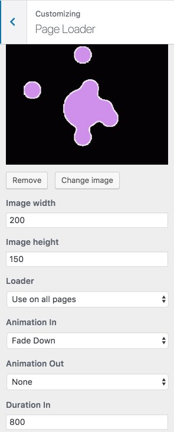Style settings
Please go to Apperance - Customizer - Style settings .
Here you can configure theme font and color styles .
You can change the color globally but you will still need to change it in some elements individually using page builder .
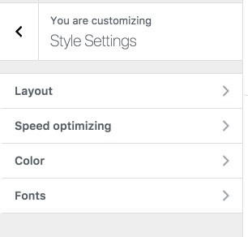If you need to make some changes to the styles that are not provided in our settings then you can use the yellow pencil .
Header settings
Please go to Apperance - Customizer - Header .
Here you can configure page header .
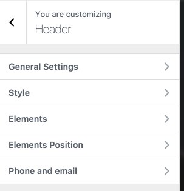If you want to set up an individual header for a separate page, activate this feature on the page using Apperance - Customizer - Header - Advanced Options on Page - On
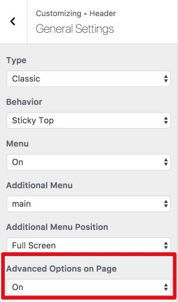You can use this feature on the page now.
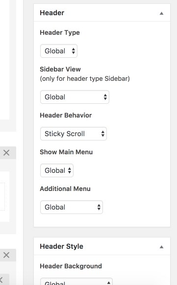 You can disable some elements for the correct display of the header elements on mobile devices using
Apperance - Customizing - Responsive
Search settings
Please go to Apperance - Customizer - Search .
Here you can configure Search text.
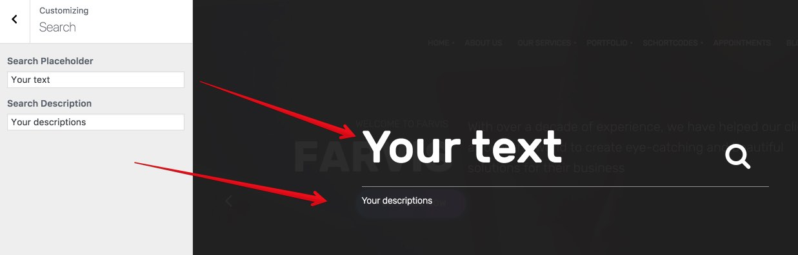Page heading
Please go to Apperance - Customizer - Page Title and Breadcrumbs.
Here you can configure page heading .
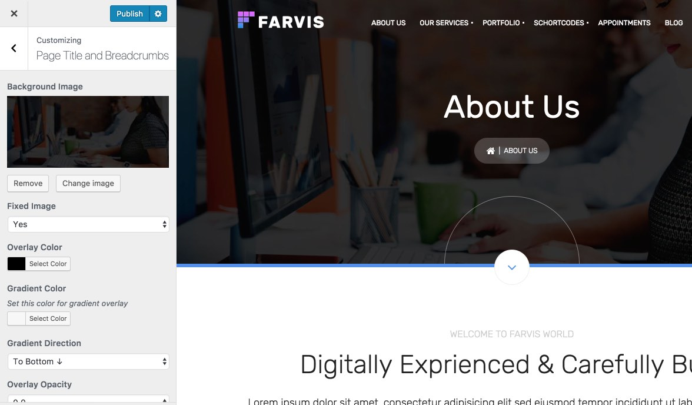Please make sure you do not use the home template to see your Page heading .
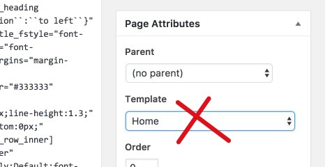Static Blocks
To setup and edit custom footer and Megamenu please use static blocks but set the necessary settings for this in the WPBakery Page Builder (formerly Visual Composer) .
{kind=link}
Menu settings
{kind=link}
{kind=link}
{kind=link}
Footer settings
Please before make sure that you have activated the operation of WPBakery Page Builder (formerly Visual Composer) for static blocks
First please edit and choose footer in Apperance - Customizer- Footer .
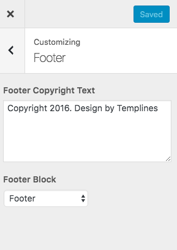{kind=link}
Now you can create unique footer and add them to your footer in theme customizer using static blocks.
{kind=link}
{kind=link}
Widgets settings
Our theme comes with Custom widget created specially for the theme.
To set the Widget go to Appearance > Widgets.
Newsletter - MailChimp for WordPress plugin
To display the form please use this code in mailchump plugin.
If you have Troubleshooter. “Please select at least one list to subscribe to” error please follow this instruction
You can also configure a variety of forms using contact form 7 and Mailchimp extension .
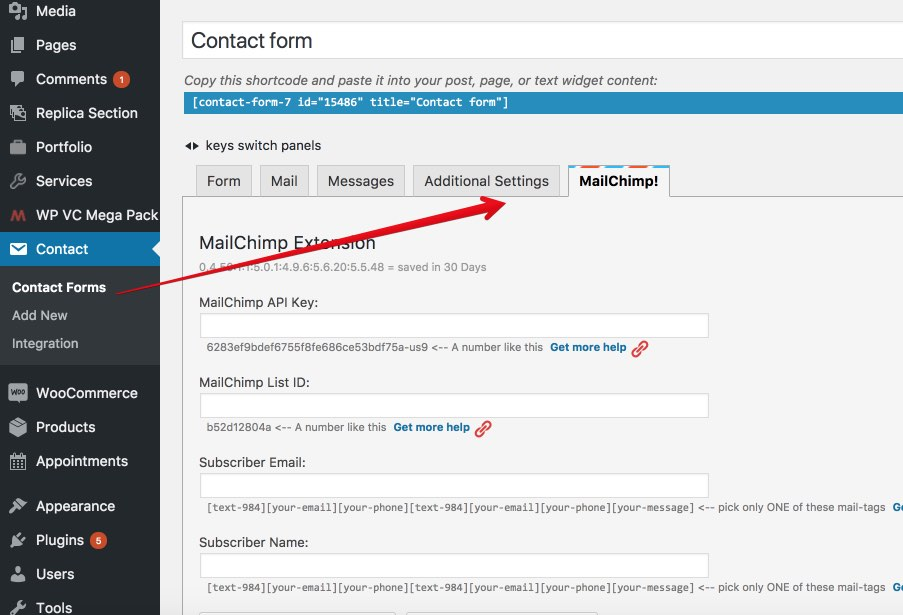Web font icon loader
Apperance - Font Icons Loader
After upload nothing has happened?
Please use the correct zip structure .
You must set permission 777 on the folder wp-content/plugins/font-icons-loader .
You can manually add in folder wp-content/plugins/font-icons-loader/fonts/newicons
Css live editor - Yellow Pencil
Yellow Pencil it is Visual CSS Style Editor For WordPress . Please use it to css customize your site . I recommend you to read all plugin documentation for learning all features!
- Documentation: Yellow Pencil documentation
- Video tutorials: Video tutorials
For any custom changes we provide a premium plugin Yellow pencil . With this plugin, you can make changes without knowledge of css . In this video lesson you will be able to change the position of the logo and change the font menu
You can use the response mode to change or hide elements on tablets or smartphones.
Please follow these steps:
- Open Yellow Pencil Editor
- Click “Responsive Mode” button on Left-bar.
- Resize website to 600px in Responsive Mode.
- Select the element that you want to hide.
- Yellow Pencil Panel > Extra > Display option
- set “none” value for display option.
- Save changes.
Plugins Activation
You can use these plugins with the farvis theme and you are fully compliant with the Envato’s policy, but you cannot activate them as the owner (so don't try to use the farvis purchase code to activate one of these plugins).
When you purchase a theme from ThemeForest that bundles WPBakery Page Builder (formerly Visual Composer) and Revolution Slider, you are free to use these Premium plugins with the theme. However, your farvis purchase does not give you individual WPBakery Page Builder (formerly Visual Composer) and Revolution Slider licenses that allow you to activate or download these plugins as you wish. Activation doesn’t mean the plugin will not work but only that you cannot receive direct updates. Please don't worry if you see warning messages about the plugin license activation.
To update you need:
- Navigate to the Plugins menu in your WordPress admin area.
- Deactivate revolution slider, delete it
- Go to Install Required Plugins
- Upload and install the new version
- Activate WPBakery Page Builder (formerly Visual Composer).
Page Builder
WPBakery Page Builder (formerly Visual Composer) gives you instant access to built in content elements. Each content element has been carefully crafted and offers multiple options that will enable you to build any layout you desire. You can build complex layouts based on these content elements within minutes, and without requiring a single line of code. Please check this video tutorial:
- Documentation: kb.wpbakery.com
- Video tutorials: vc.wpbakery.com/video-tutorials
Kaswara plugins
For the construction of our template, we use Kaswara module . This add-on for WPBakery Page Builder (formerly Visual Composer) . With this module you can create different pages without any limits . Please read documentation before start doing it
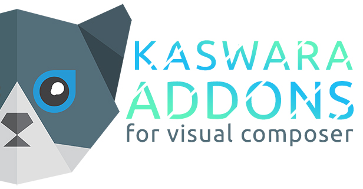Theme elements
In WPBakery Page Builder (formerly Visual Composer) we added a custom Theme elements . You can use it for create your own unique style.
Step 1 - Log in to your WordPress Administration Panel.
Step 2 - Click on Pages > Add New.
Step 3 - Click on farvis.
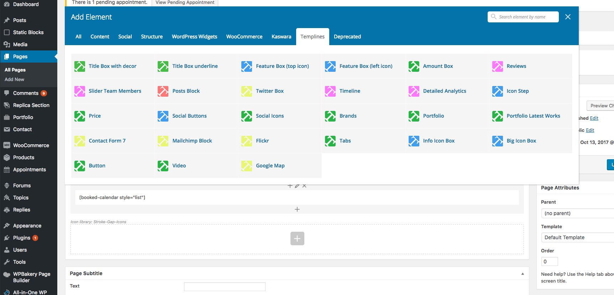
Row Settings
To create a new unique section use default row settings and also theme row options .
Step 1 - Log in to your WordPress Administration Panel.
Step 2 - Click on Pages > Add New.
Step 3 - Click on Backend Editor.
Step 4 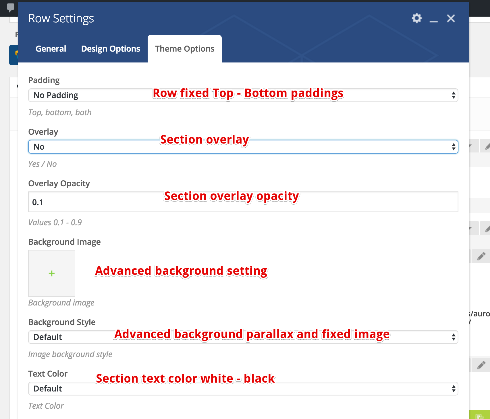
Add and modify Row Layout
Step 1 - Go to your page / post, first activate the backend editor and click Add Element
Step 2 - Select the Row Module
Step 3 - Click on the Edit This Row (pencil icon) to Edit the Row element ( in our example we use row with 3 columns filled with text block )
Step 4 - To change the Row layout ( number of columns ) you need to click the second Icon from the left then select a layout or custom to make your own
Edit Element
Pencil Icon - To Edit Row, Column or Module you need to click the Pencil icon.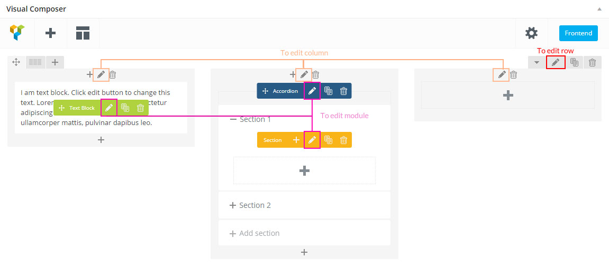
Duplicate Element
Pages Icon - To Duplicate Row or Module you need to click the Pages icon.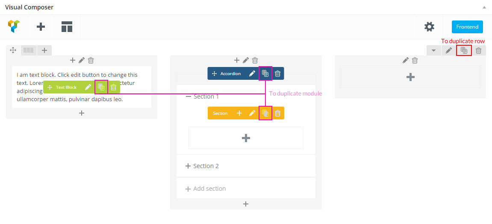
Remove Element
Trash Box Icon - To Remove Row, Column or Module you need to click the Trash Box icon.
About Row / Column / Custom heading / Text Block Design options
Design Options - When you edit row / column / custom heading / text block module, you can edit the design options .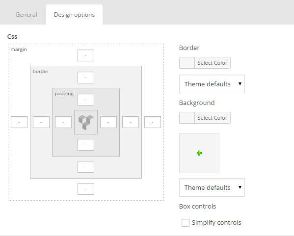 Row / Custom Heading / Text Block element have a default Bottom Margin of 35 pixel, you may want to set it to 0 if you don't want to have bottom space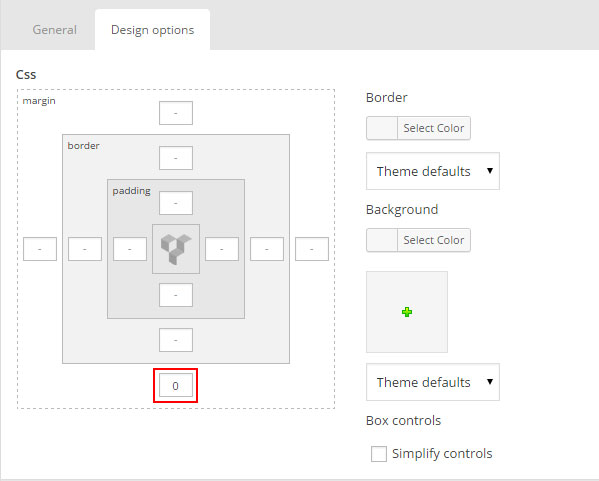 It is Good to add bottom Padding to your Column, so they will looks good on mobile  Left and Right Margin should NEVER be modified, please left blank
Left and Right Margin should NEVER be modified, please left blank For Row module the Left and Right Padding should also NEVER be modified, please left blank 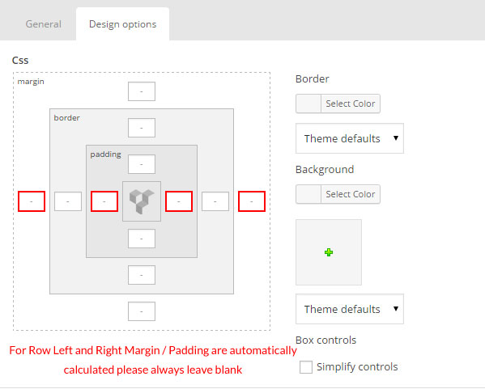
For Row module the Left and Right Padding should also NEVER be modified, please left blank 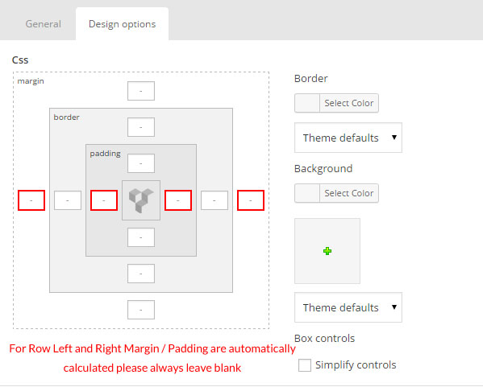
Row full width
To create a new unique section use default row settings and also theme row options .
We will explain how to create a full width content section.
Step 1 - Go to your page / post, first activate the backend editor and click Add Element 
Step 2 - Select the Row Module
Step 3 - Click on the Edit This Row (pencil icon)
Step 4 - Change the Type setting to Full width content then click Save changes 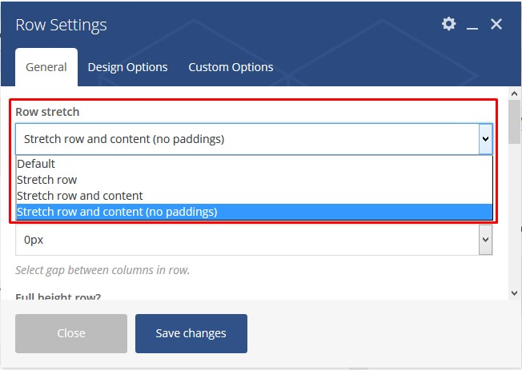
Row background
Step 1 - Go to your page / post, first activate the backend editor and click Add Element 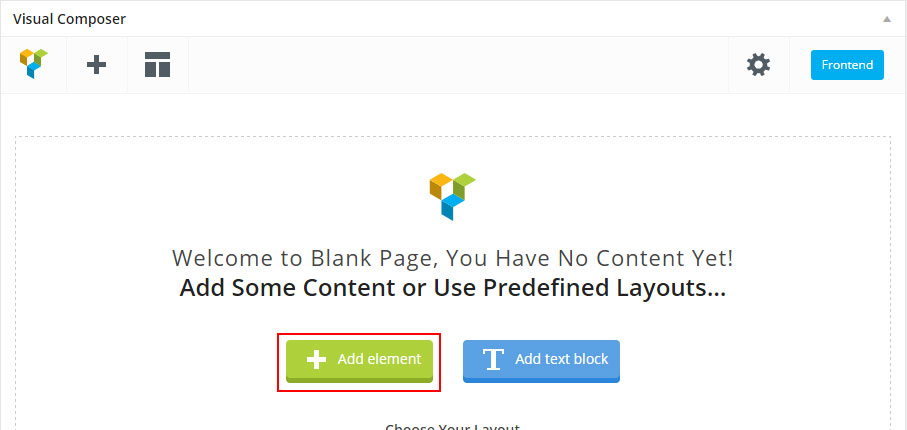
Step 2 - Select the Row Module
Step 3 - Click on the Edit This Row (pencil icon)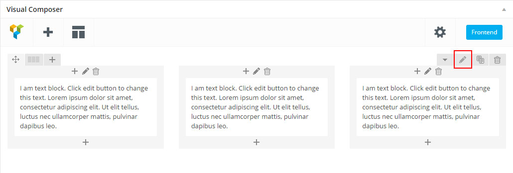
Step 4 - Click on Design Options ADD padding and REMOVE margin for better result, add a Background Image change to Cover and then Saves changes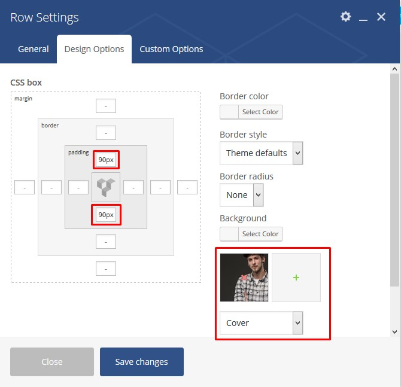
Step 5 - Seclect background overlay and Enable background fixed in this row. 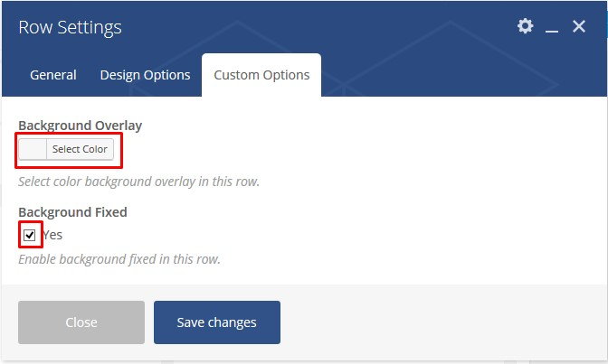
Step 6 - Update or Publish your page and you should now have a section with background fixed
Parallax Section
Step 1 - Go to your page / post, first activate the backend editor and click Add Element 
Step 2 - Select the Row Module
Step 3 - Click on the Edit This Row (pencil icon)
Step 4 - Add parallax type background for row (Note: If no image is specified, parallax will use background image from Design Options). 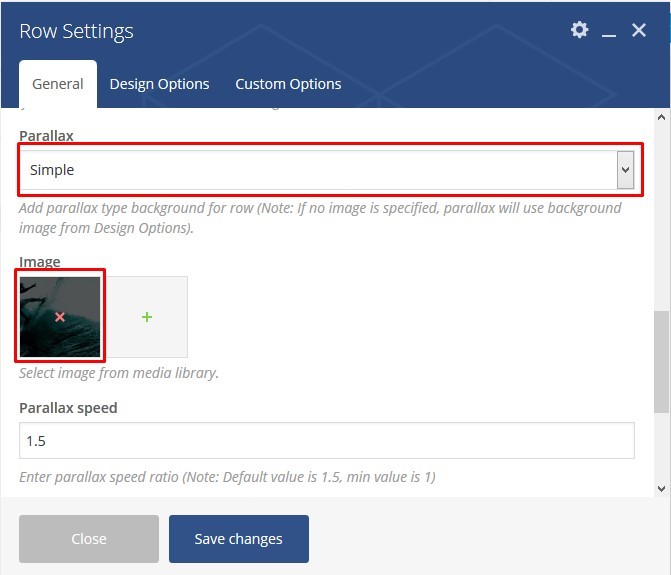
You can also use advanced parallax in the options theme 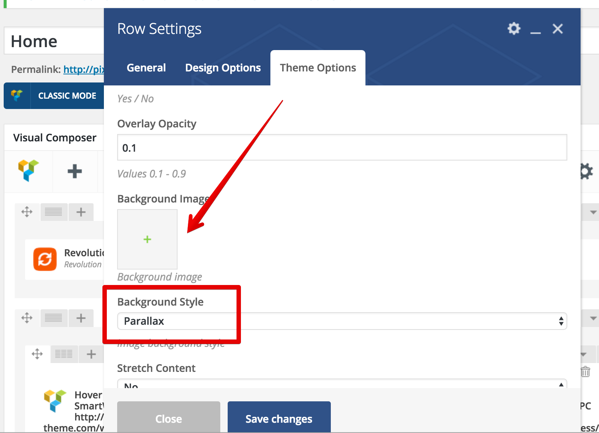
Step 5 - Click on Design Options ADD padding and REMOVE margin for better result, add a Background Image change to Cover and then Saves changes
Step 6 - Update or Publish your page and you should now have a section with parallax background
Video Section
Step 1 - Go to your page / post, first activate the backend editor and click Add Element 
Step 2 - Select the Row Module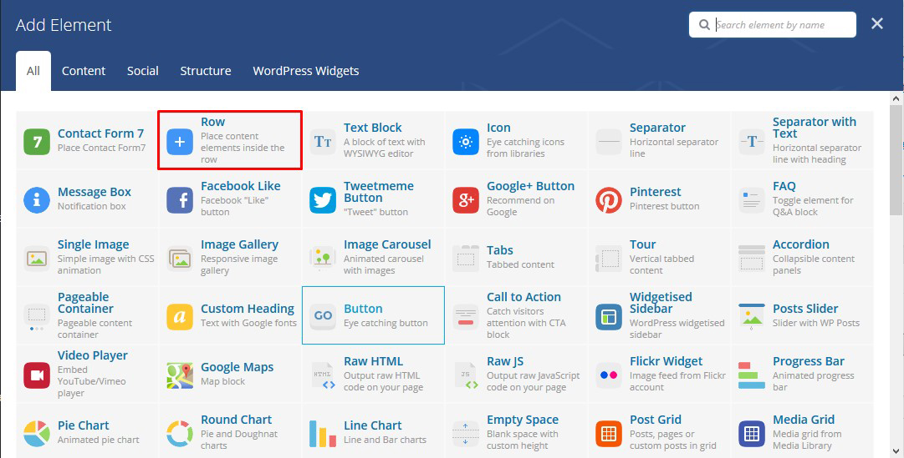
Step 3 - Click on the Edit This Row (pencil icon)
Step 4 - If checked, video will be used as row background.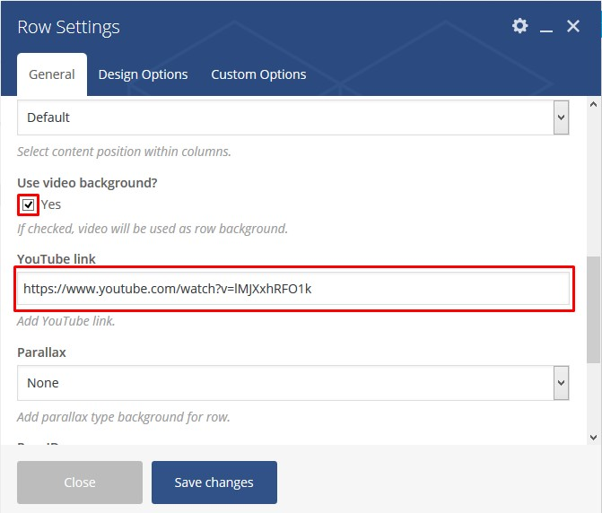
Step 5 - You can edit the Design options ( remove margin and add padding "optional" ) and then Saves Changes and Update / Publish your page. You should now have a Full width Section with Video
Revolution slider
- Documentation: slider-revolution-documentation
- Video tutorials: On youtube
If you are unfamiliar with this awesome plugin, we recommend that you use the online documentation
Auto-Updating
The Envato Market plugin can install WordPress themes and plugins purchased from ThemeForest & CodeCanyon by connecting with the Envato Market API using a secure OAuth personal token. Once your themes & plugins are installed WordPress will periodically check for updates, so keeping your items up to date is as simple as a few clicks.
You can add a global token to connect all your items from your account, and/or connect directly with a specific item using a singe-use token & item ID. When the global token and single-use token are set for the same item, the single-use token will be used to communicate with the API.
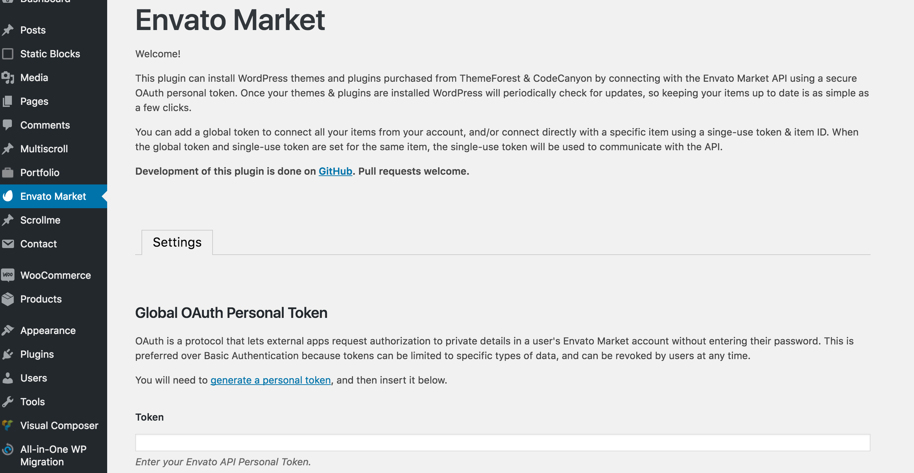Manual Updating
You can update your theme manually by performing the following steps:
- Download the latest theme zip file from ThemeForest
- Extract it and locate farvis.zip
- Extract farvis.zip and locate the farvis folder
- Copy/Replace content of the farvis folder to the /wp-content/themes/farvis folder of your web site.
Speed Optimization
If you think your website takes too much time to load maybe you should.
- Please go to Apperance - Customizing - Style Settings - Speed optimizing and Minify all styles and scripts.
- Install a Cache Plugin for WordPress. We recommend W3 Total Cache.
- Install an Image Compress Plugin. We recommend WP Smush It.
- Install a Database Optimizer Plugin We recommend WP Optimize
- Reduce the number of posts on the page
- Use more icons and less images. You can check your page weight here.
- Reduce the number of unnecessary plugins
For correct operation never disable the following plug-ins
- Theme Plugins
- WPBakery Page Builder
- Kaswara Modern VC Addons
- Font Icons Loader
- Category Order and Taxonomy Terms Order
- Meta Box
- Envato Market
Changelogs
All information about updates here Appearance - About theme